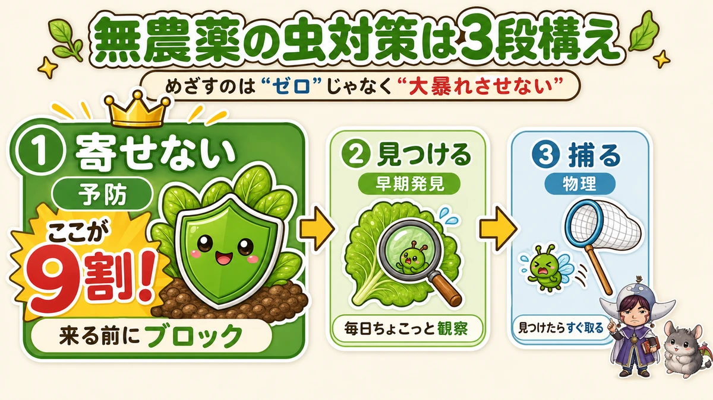
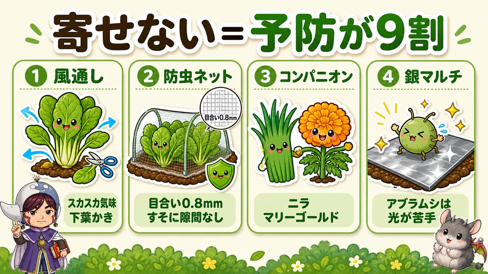
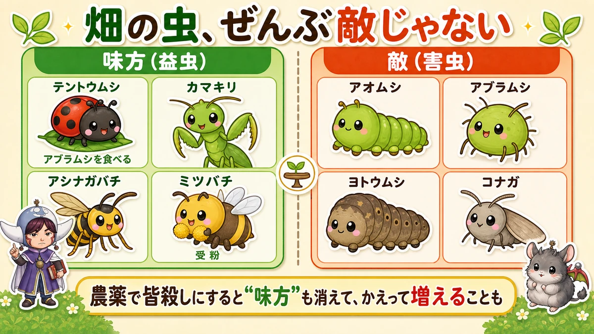

Pest control without sprays 🐛 Keep them out, spot them, pick them off

🐛 "The leaves are full of holes — it's turning into lace."
🐛 "I want to grow without pesticides, but honestly, what do I do about insects?"
🐛 "It's demoralising even to look."
Hello, I'm Eiko. Eight years of growing vegetables organically and without pesticides, and a teaching licence in science.
Today: the biggest worry in no-spray growing. And I'll be honest from the first line.
Zero insects, without sprays, is not achievable.
Sorry to start there. But it's fine — because the target isn't zero, it's "no outbreaks". Confuse the two and you'll be miserable forever, always finding one more caterpillar. A garden with a few insects in it is usually a sign of a healthy one.
Three stages: keep them out, spot them, pick them off

What this diagram says （図解の文字）
- "The target isn't 'zero', it's 'no outbreaks'"
- 1 Keep them out — prevention — "this is nine tenths of it! Block them before they arrive"
- 2 Spot them — early detection — "a little look, every day"
- 3 Pick them off — physical — "find one, remove it straight away"
That's the whole of no-spray pest control. Without a chemical to fall back on, how much of stage 1 you do decides everything that follows.
Put all your effort into stage 3 and it becomes an endless chase. You end up fighting caterpillars every morning and give up by July. The order matters.
① Keep them out — nine tenths of the job

What this diagram says （図解の文字）
- ① Airflow — "err on the sparse side", "strip the lower leaves"
- ② Insect netting — "0.8 mm mesh", "no gaps at the hem"
- ③ Companion plants — garlic chives, marigold
- ④ Silver mulch — "aphids dislike light"
Airflow
Insects love dense, humid growth. So: don't crowd your plants, strip the lower leaves, thin out congested stems. That alone removes both the damp and the hiding places. For no-spray growing, slightly sparse is about right.
Insect netting — the most reliable thing you can do
Especially for brassicas (cabbage, Chinese cabbage, radish, broccoli), where I'd call it essential.
- Choose 0.8 mm mesh or finer (about 0.03 in). Small pests like diamondback moth get through 1 mm
- Leave no gap at the hem. Get this wrong and you've built them a private dining room
Trap 1: don't let the leaves touch the net. Where a leaf presses against the mesh, moths lay eggs from outside and the newly hatched larvae come through the holes. Low tunnels make this likely — use a slightly taller hoop so there's air between net and leaf.
Trap 2: netting put on late makes things worse. Cover a plant that already has pests on it and you've built a paradise that predators can't enter. I did this once myself. Net at planting time, or not at all.
Companion planting
Garlic chives or spring onions at the base of a plant; marigold or basil along the path. It sounds like folklore, and yet it quietly works.
The knack is mixing plant families. Most insects eat a fairly narrow range. Put chrysanthemum greens next to the radishes, a lettuce (daisy family) in the middle of the brassica bed. With liked and disliked smells mixed together, the response becomes "something smells wrong here — I'll go elsewhere".
The year I interplanted Chinese cabbage with lettuce, damage came to around a tenth of usual. But don't over-trust it: it reduces, it doesn't eliminate. Some individuals decide the smell is worth putting up with.
Silver, to confuse aphids
Aphids dislike glinting light. Silver mulch film, or even a short strip of silver tape hung from a stake, makes them less likely to settle.
Don't carry them home
When buying transplants, check the undersides of the leaves. Bring home a plant with eggs or aphids on it and you've introduced them yourself.
Don't over-feed
An unexpected one. Too much nitrogen is said to make leaves sappy in a way insects find delicious. The harder you push for size, the more you invite. Moderate feeding ends up being the strongest position.
② Spot them and ③ pick them off — while they're still small
Prevention won't get you to zero. So: find them early, remove them small. This part is about speed.
How much looking? About ten minutes, in the morning. That's enough. But without sprays, two or three days of not looking is too long. Skip three days and things really do get eaten. Which is the good news too: a ten-minute habit is all it takes.
How to find them
- Look first thing in the morning. Armyworms and slugs work at night and hide by day. If damage keeps appearing with no culprit in sight, go out at dusk with a torch and you'll catch them mid-meal
- Look under the leaves. Eggs and aphids are nearly always underneath. "Looks fine" from the top is not an inspection
- Look for droppings. Black specks on a leaf mean something is directly above or very close 🔍
- A leaf going pale and scratchy-looking means newly hatched armyworms are feeding on the back of it, in a group. Lift it gently and you'll see dozens of tiny ones. Remove that whole leaf now and the damage stops there
- A leaf reduced to netting means armyworms — they leave the tough veins and eat only the soft tissue. Lace-like damage means a well-grown individual
- Holes but no culprit means it's in the soil. Armyworms and cutworms sleep by day in the soil at the base of the plant. Loosen it with your fingers and out they come — and not just one. Usually three or four, sometimes five or six together, so search thoroughly around a damaged plant
- A plant cut off at the base means a cutworm. Move the fallen leaves and it's usually right underneath, asleep
How to remove them
- Caterpillars — by hand, or with chopsticks into a bucket if you'd rather not touch them
- Aphids — a few, press packing tape onto them; a lot, rub them off with a glove or wash them off with water. If there's a ladybird present, leave it alone (reason below)
- Diamondback moth and armyworms — easiest at the egg stage: yellow specks under a leaf, remove the leaf. Once grown, even sprays struggle
- For cucurbit leaf beetles, one bucket. A free trick: a yellow or orange bucket with water in it, set down among the plants. The beetles are drawn to that colour, fly in, and can't climb out of water. No detergent needed. It catches thrips too. Not 100 % — treat it as a helper
- I don't recommend yellow sticky traps. They barely catch cucurbit beetles, and they do catch ladybirds and other allies. For no-spray growing, skip them
- Act while they're small. The bigger they get, the less anything works. Not "it's small, I'll watch it" but "it's small, so now"
The worst option is looking away. "Tomorrow will do" is one night in which aphids double. Conversely, a short daily look makes no-spray growing far easier.
Where vinegar spray actually stands
The most misunderstood thing in no-spray growing, so let me be blunt.
Vinegar spray does not kill insects. Read the label and it says "preventive spray". Spray it onto pests and they don't die. I once assumed it would work as a knock-down, sprayed away, and nothing happened at all.
Used correctly, you apply it when there are no pests present, to make the plant less attractive. If pests have already arrived, wash them off with water first, then spray. In the other order it's pointless.
Timing: once or twice a week, and the day after rain — rain washes it off, so start again when it does.
Science bit: not every insect is an enemy 🔬

What this diagram says （図解の文字）
- Allies (beneficial): ladybird — "eats aphids" ／ praying mantis ／ paper wasp ／ honeybee — "pollination"
- Enemies (pests): cabbage white caterpillar ／ aphid ／ armyworm ／ diamondback moth
- "Kill everything with a spray and the allies go too — which can mean more pests, not fewer"
- Ladybirds — larvae and adults both eat aphids steadily. A single one can take 100 in a day
- Spiders, mantises, paper wasps — alarming to look at, hunters of pests. The garden's security staff
- Bees and hoverflies — they move pollen. Without them you get no fruit at all
So a spray that kills everything removes the predators along with the pests. The next wave of pests then arrives with nothing to eat it — and you can end up with a bigger outbreak than before.
The interesting part: on that Japanese list of designated substances, natural enemies — ladybirds, other insects, spiders — are themselves included. Officially, these creatures count as a means of pest control. The ladybird in your garden is a first-rate helper working for free.
A no-spray garden runs on this eat-and-be-eaten balance. Which is why a few insects is a sign that the balance is working.
If you have children, look at it together: is this one an enemy or an ally? Catching a ladybird actually eating an aphid is a science lesson on its own. I came to love science because a teacher brought real insects in to show us — seeing the actual thing is what makes it interesting.
To sum up
- ✅ Zero insects without sprays isn't possible. The target is "no outbreaks"
- ✅ ① Keeping them out is nine tenths — airflow, netting, mixed families. Start here
- ✅ ② Mornings and leaf undersides for early detection → ③ hand or tape while they're small
- ✅ Vinegar spray doesn't kill. Correct use: no pests present, once or twice a week, the day after rain
- ✅ Netting: don't let leaves touch it, and put it on at planting. Late netting traps pests inside
- ✅ Ladybirds are on your side. Not killing everything is the shortcut
Insects aren't something to be frightened of. Don't try to defeat all of them — aim for "no outbreaks". Loosen your grip a little and no-spray growing becomes much easier to keep up 🌱
Thank you for reading!